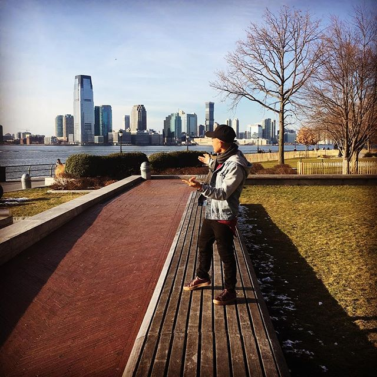

I'm Miguel, from Rocky Mount, NC
I was raised in Eastern NC, have 3 brothers, a wondeful Mom, a niece and a nephew.
Graduated from Northern Nash Senior High-School in 2014.
family isn't the most weatly, so I had my first job at the age of 15 and I've worked ever sense.
I love animals, specialy Dogs we have an Australian Shepperd named Kipp.
in the course of my life, I been able to meet people with different cultures, custums and languages, which I love.
Love, to travel meet people and eat different food!
